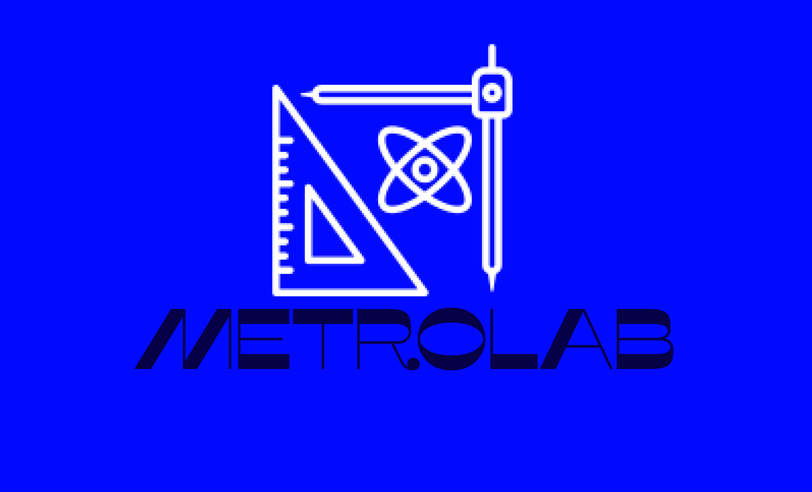
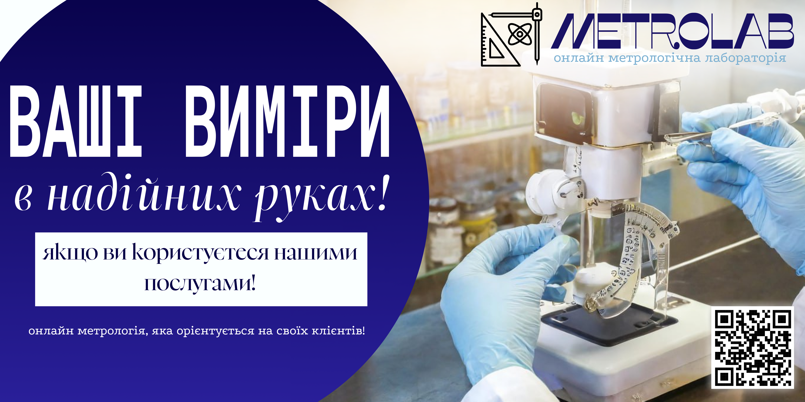
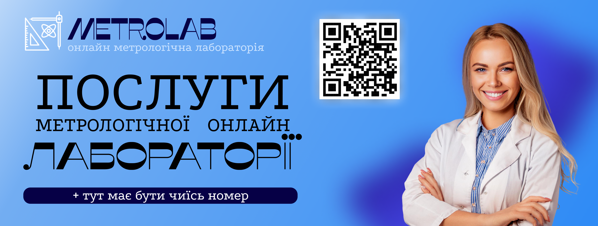

Логотип компанії
Це мій перший досвід створення логотипу для власної онлайн-лабораторії. Я розробила концепцію, обрала кольорову гаму та шрифт, що відображають точність і сучасність.
ПереглянутиСтудентка факультету кореляційної оптики, спеціальність — Метрологія, інформаційно-вимірювальна техніка. 2-й курс, бакалаврат.
Переглянути мої роботиЯ — Юлія Прокопюк, студентка факультету кореляційної оптики за спеціальністю Метрологія, інформаційно-вимірювальна техніка. Захоплююся сучасними технологіями та графічним дизайном, і прагну поєднати точні науки з творчістю.
Зараз я намагаюсь вивчати основи HTML та CSS, а також знайомлюся з системою контролю версій Git. Мій шлях у веб-розробці тільки починається, але я вже бачу, як ці знання доповнюють мою інженерну освіту.
Навчаюсь на 2-му курсі, здобуваючи ступінь бакалавра. Моя мета — стати професіоналом, який вміє не лише вимірювати й аналізувати, а й презентувати результати своєї роботи сучасними цифровими засобами.

Це мій перший досвід створення логотипу для власної онлайн-лабораторії. Я розробила концепцію, обрала кольорову гаму та шрифт, що відображають точність і сучасність.
Переглянути
Рекламний банер для моєї онлайн-лабораторії. Завдання — привернути увагу потенційних клієнтів і коротко пояснити суть послуг. Використовувала Adobe Express та Canva.
Переглянути
Робота з рекламою для міста та піар-кампанії. Банер орієнтований на широку аудиторію — акцент на візуальній простоті та чіткому повідомленні бренду.
Переглянути